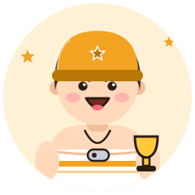
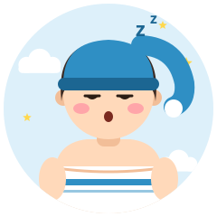

- H高温ガッツリ
- W水風呂派
- Tみんなでサウナ
- R計画・ルーティン
熱血キャプテン
The Captain
仲間を引っ張る、サウナ部の部長
熱さを仲間と分かち合う
盛り上げ隊タイプ『今日は3セットいくぞ！』と仲間を率いる存在。熱さも冷たさも一緒に分かち合ってこそ、と考えています。
強み
- リーダーシップ
- 場を盛り上げる
- 計画的で面倒見がいい
気をつけたいこと
- ペースを仲間に押し付けすぎないで
相性のいいタイプ

気づけば外気浴で雲を数えている
前のめりな熱を、夢見人の静けさが一度ゆるめてくれる。外気浴でふっと我に返る時間をくれる相手。
おすすめのサウナ
熱波イベントのあるサウナ、貸切サウナ
- saunaM 愛知県 名古屋駅 サウナ専門
駅近の完全予約制プライベートサウナ2つの個室に水風呂と外気浴スペースを完備。男女でも利用できる 公式サイト地図で見る - 神戸サウナ&スパ 兵庫県 神戸・三宮 サウナ専門
11.7℃の露天水風呂が名物の老舗30分ごとのロウリュ、フィンランド式など4種のサウナ。ご案内はメンズフロアで、レディスフロアは別 公式サイト地図で見る - サウナ&カプセルホテル 北欧 東京都 上野 ホテル・カプセル 男性専用
駅近・24時間のストイックな男の聖域上野駅から徒歩約1分、サウナのみの利用も可 地図で見る
※ 営業状況・料金・利用条件は変わることがあります。訪問前に公式情報をご確認ください。
あなたのタイプは？
熱血キャプテンは、サウナの好みで分かれる16タイプのひとつです。質問に答えるだけで、あなたの「ととのい方」がわかります（無料・登録不要・約3分）。
ほかのタイプ
※ 娯楽目的の診断です。サウナは体調に合わせて無理せず、水分補給をしてお楽しみください。